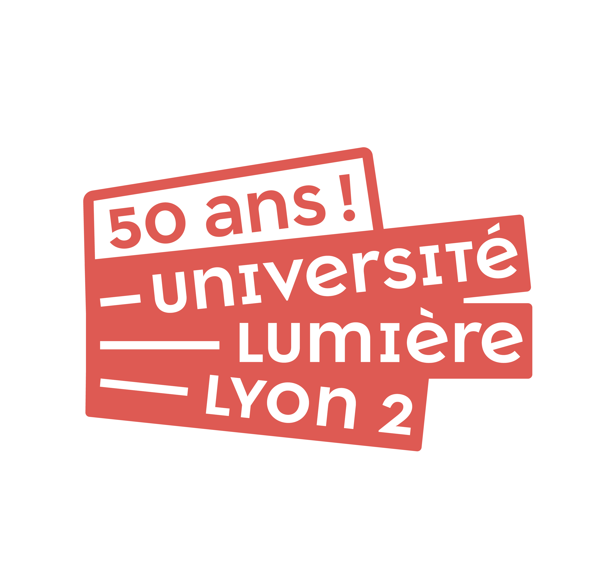
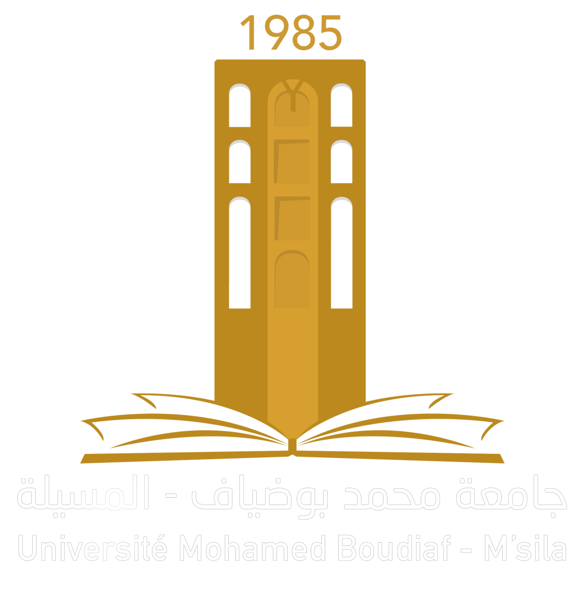

About
Data Science Student
Hi 👋 je suis Azi Ala Eddine diplômé d'un licence en informatique et acuellement etudiant en
M1 Miashs (Data Science), avec une forte appétence pour les sujets techniques et un esprit analytique.
Prêt à repousser les frontières de l'innovation.
N'hésitez pas à me contacter si vous avez des questions ou si vous souhaitez discuter d'opportunités professionnelles :
- Numéro tél: +33 774374830
- Adresse: Lyon, France
- Mobilité: France
- Email: alaaazi2002@gmail.com
- LinkedIn: Ala Eddine Azi
- GitHub: Azi Alaeddine Taha
Skills
Durant mon parcours académique, j'ai acquis une solide base en mathématiques,Dévelopement Web
et en statistique, ainsi qu'une bonne connaissance de plusieurs outils et technologies
clés du domaine tel que Python (Pandas, Matplotlib, Scikit-learn, Scipy, Numpy, Seaborn), SQL et PowerBI.
En plus de ces compétences en programmation, j'ai également de solides compétences en
Machine Learning (ML),
traitement du langage naturel (NLP) et en bases de données relationnelles
(RDBMS). j'ai suivi plusieurs formations en ligne sur ces sujets et j'ai mis en pratique mes connaissances sur des projets de Data
Science
réels.
J'ai également de bonnes compétences en visualisation de données et en communication de résultats
. Je suis capable de produire des graphiques et des tableaux de manière claire et concise,
Education & Work Experience
Dans cette section, je dévoile mon parcours académique ainsi que mes expériences professionnelles qui s'articulent autour de la mise en pratique des concepts théoriques acquis au cours de mes études. Ces expériences, à la fois denses et porteuses d'apprentissages riches , ont été des terrains fertiles pour le développement de mon savoir-faire technique . De manière équivalente, elles ont été cruciales dans l'affinement de ma capacité à collaborer en équipe et à diriger des projets de manière efficace.
Education
 Master 1 Miashs (Data Science)
⏳ 2023 - 2024
🏢 Université Lyon Lumière 2
➤ Cours suivis :
Machine/Deep Learning •
Analyse de données •
Traitement du langage naturel NLP •
Gestion de bases de données relationnelles •
Supervised & Unsupervised Statistical Machine Learning •
Outiles Et Logiciels D'analyse •
Planification et prise de décision
 Projet fin d'études
⏳ févr. 2023 - juin. 2023
🏢 Université de M'sila
➤ Réalisation du Projet fin d'études :j'ai dirigé le développement d'une application web dédiée à la gestion et à la passation d'examens en ligne. Face aux défis des examens traditionnels sur papier, notre solution a été de créer une application robuste utilisant HTML, JavaScript, PHP et MySQL. Cette application offre une interface conviviale pour l'administration d'examens en ligne, permettant aux utilisateurs de tester leurs connaissances de manière pratique et de surmonter les limitations des méthodes traditionnelles d'évaluation. Ce projet a renforcé ma maîtrise des langages de programmation et ma capacité à proposer des solutions technologiques innovantes. , ce projet m'a permis d'acquérir des compétences en :
-
➥ Maîtrise des langages de programmation front-end tels que php/JS
➥ Expertise en développement back-end
➥ Utilisation de bases de données relationnelles comme MySQL
➥ sécurité web, notamment gestion des sessions, authentification, et protection contre les attaques courantes
➥ conception graphique avec des outils tels que Adobe XD, Figma
➥ Utilisation de la Méthodologie agile et gestion de projet
➥ Travail d'équipe
Licence Ingénierie des Systèmes d’Information et des Logiciels
⏳ 2020 - 2023
🏢 University Mohamed Boudiaf - M'sila
➤ Cours suivis :
Algorithmique •
Structure et modélisation de données •
POO •
système d'aide à la décision •
Génie logiciel •
IHM •
Gestion de projets •
Algèbre linéaire •
Statistique descriptive et probabilités •
développement web •
Réseau informatique
 Certifications
Certifications
➥ 5G Mobile Communication Evolution - Huawei➥ Python Programming Basic - Huawei
➥ Computer Networks - Huawei
Professional Experience
 Bénévole Coupe du Monde Qatar 22
Bénévole Coupe du Monde Qatar 22
⏳ Octobre 2022 - Décembre 2022
🏢 FIFA
➤ Tâches réalisées :j'ai renforcé mes compétences en service à la clientèle, communication et résolution de problèmes. En accueillant les spectateurs, résolvant des situations complexes à la billetterie, et en assurant une communication claire, j'ai contribué au succès de cet événement international.. Plus précisément :
-
➥ Accueil des spectateurs
➥ Assistance à la billetterie
➥ Guidage des visiteurs
➥ Fournir des informations générales sur l'événement
➥ Aider à résoudre les problèmes des spectateurs
➥ Collaborer avec les équipes de sécurité pour garantir la sûreté des spectateurs
➥ Collecter des retours d'expérience des spectateurs pour améliorer l'organisation future d'événements
Stage Développeur Front-End
⏳ Septembre 2022 - Octobre 2022
🏢 LAFARGE HOLCIME M'SILA
➤ Tâches réalisées :En tant que développeur front-end au sein de la première usine mondiale de ciment axée sur des matériaux de construction innovants, j'ai occupé un rôle essentiel dans la conception et la mise en œuvre du côté front-end d'une application web pour la digitalisation du processus RCA (Analyse des Causes Premières). Travaillant en étroite collaboration avec l'équipe des ressources humaines, ma contribution a été significative pour la modernisation des pratiques opérationnelles de l'usine.Ce stage enrichissant a renforcé mes compétences en développement web, tout en me fournissant une perspective approfondie sur l'intégration des technologies dans le secteur industriel., ce stage m’a appris :
-
➥ Identification et analyse des besoins des clients
➥ Réalisation de suivi et respect du planning
➥ Intégration des Technologies Industrielles
➥ Digitalisation des Processus
➥ Gestion de la pression et apprentissage de nouveaux concepts
➥ travaille d'équipe
Projects
Dans cette section, je vous présente les projets auxquels j'ai participé et qui ont contribué à développer mes compétences et
mon expertise dans le domaine. Ces projets ont été réalisés dans le cadre de mes études.
Ils couvrent une large gamme de domaines et de technologies, et m'ont permis de mettre en pratique mes connaissances et
de développer de nouvelles compétences, vous trouverez plus de détails sur mon dépôt GitHub
- All
- Python
- Dashbord & DB
- Others
Conception d’une application web pour la gestion des quizzes online
Déscription du projet : "Quizzy" est une application web conçue pour faciliter la création et la passation d'examens en ligne. Son architecture permet aux utilisateurs de générer des évaluations personnalisées et de les administrer de manière interactive sur la plateforme. Grâce à "Quizzy", l'ensemble du processus d'évaluation devient plus accessible, efficient et adapté à un environnement numérique, offrant ainsi une solution moderne pour la gestion des examens en ligne
Classification des mails spams/hams
Déscription du projet :
Le but de ce projet est de réaliser une classification de documents,
il consiste à classifier des mails en spams/hams en utilisant plusieurs techniques de Machine Learning,
en passant par les étapes principaux : Récolte des données, Nettoyages et préparations des données (ponctuation, stops words, TF-IDF),
lemmatization, vectorisation, construction des jeux de données pour l'entrainement et
le test afin d'évaluer nos modèles